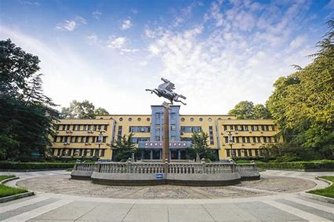
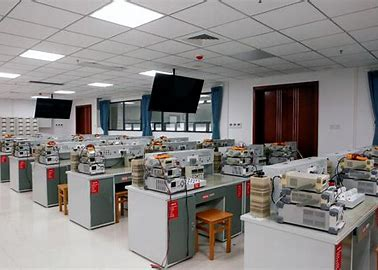
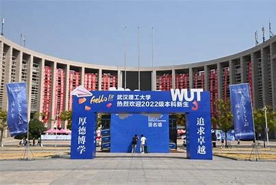
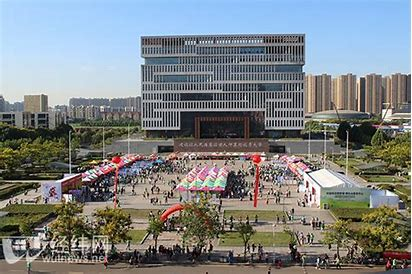
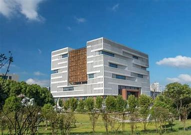

武汉理工大学学校概况
学校简介
武汉理工大学是教育部直属全国重点大学，是首批列入国家“211工程”和“双一流”建设高校，是教育部和交通运输部等部委共建高校。学校办学历史起源于1898年建立的湖北工艺学堂，办学120多年来，学校共培养了60余万名高级专门人才，是教育部直属高校中为建材建工、交通、汽车三大行业培养人才规模最大的学校，已成为我国“三大行业”高层次人才培养和科技创新的重要基地。
学科专业
学校学科门类齐全，已形成以工学为主，理、工、经、管、文、法、艺、教等多学科相互渗透、协调发展的学科专业体系。现有一级学科博士学位授权点22个，一级学科硕士学位授权点45个，博士后科研流动站19个。材料科学、工程学、化学、计算机科学等4个学科进入ESI全球排名前1%，8个学科入选湖北省一流学科重点建设学科。
师资力量
学校现有教职工5800余人，其中专任教师3200余人，中国科学院、中国工程院院士15人（含外聘），澳大利亚工程院院士1人，欧洲科学院院士3人，俄罗斯工程院院士3人。国家、部委级人才81人，国家教学名师5人。众多优秀教师秉持着严谨的治学态度和深厚的学术造诣，为学生的成长和发展提供了坚实的保障。
校园文化
学校以“厚德博学，追求卓越”为校训，形成了“严谨、勤奋、求实、创新”的优良校风。学校注重学生全面发展，积极开展丰富多彩的校园文化活动，现有学生社团200多个，涵盖了学术科技、文化艺术、体育健身等多个领域，为学生提供了广阔的发展空间，让学生在学习之余能够充分展现自己的才华和个性。
校园环境
学校现有马房山校区、余家头校区和南湖校区，校园占地面积4000余亩，校舍建筑面积180余万平方米，图书馆馆藏纸质图书570余万册。学校校园环境优美，绿化覆盖率高，漫步在校园中，随处可见绿树成荫、繁花似锦的景象，是读书治学的理想场所。